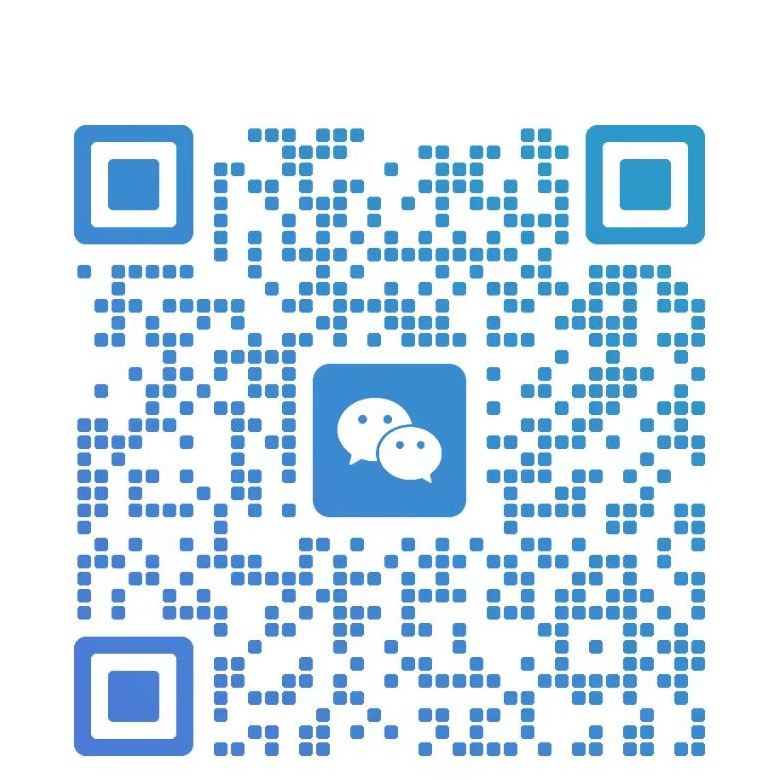

支付收单业务
围绕线下商户支付场景，持续参与收单服务、商户沟通和业务推进，累计服务个人 3000+。
PAST EXPERIENCE
我叫陈青，是一名自由职业者。支付收单和收银系统是我过去长期积累的业务经历： 支付收单业务服务个人 3000+，收银系统服务企业 300+。
这些经历让我更理解真实经营场景中的支付、收银、系统工具和数字化服务， 也成为我后来学习互联网工具、整理案例库的基础。
围绕线下商户支付场景，持续参与收单服务、商户沟通和业务推进，累计服务个人 3000+。
从支付入口延展到收银系统，学习业务流程、工具配置与互联网化服务方式，服务企业 300+。
把现在的学习过程整理成航海案例库，用文章、视频和案例复盘持续记录。
CASE LIBRARY
这是我当前阶段的学习成果展示，收录文章、视频与案例复盘。它和过往业务经历分开呈现， 重点记录我现在如何学习、理解和实践互联网相关内容。
CONTACT
